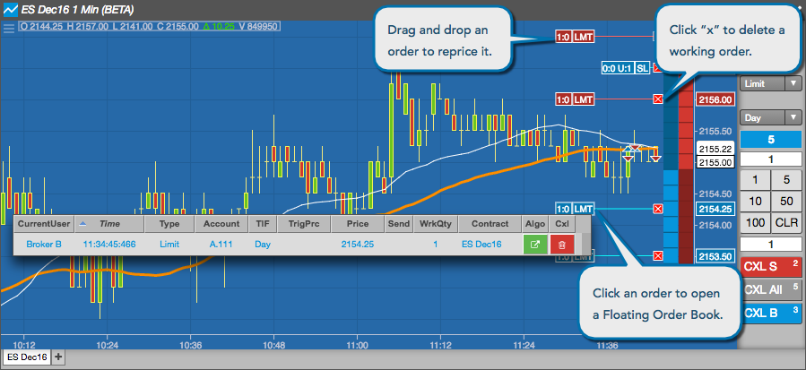
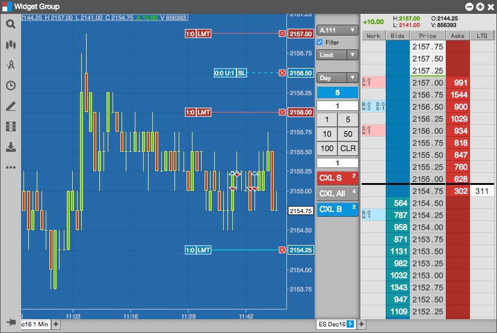

When you display working orders on a chart, you can modify those orders directly on the chart. You can delete all orders at a price level, reprice orders by dragging them to a new price level, and display a Floating Order Book that contains all of the orders at that price level. Right-click or left-click on an order to display the Floating Order Book.

You can also create custom widget groups with order entry widgets, such as MD Trader, to help you see the orders on a chart as soon as you place the order. The following example shows a widget group with a Chart and an MD Trader® widget.
As you submit orders in the MD Trader widget, they appear on the chart. You can then modify the orders either in the MD Trader widget or the Chart widget, and the other widget updates automatically.
